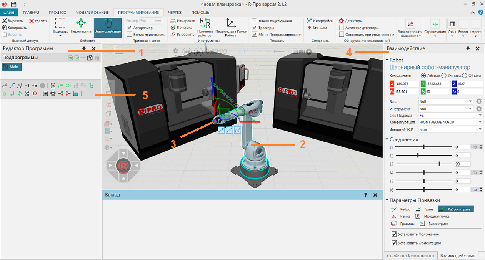

Вкладка Программирование позволяет манипулировать роботами в трехмерном мире и создавать для них программы.

1. |
Панель редактора программы |
2. |
Робот-манипулятор |
3. |
Позиция робота |
4. |
Панель Взаимодействие |
5. |
Меню Программирования |

Доступ
Чтобы получить доступ к программированию робота:
·Нажмите на вкладку Программирование
Панели
На вкладке программирование по умолчанию отображаются следующие панели:
·Редактор программ для чтения, написания и редактирования программ роботов и других компонентов на планировке.
·Взаимодействие для обучения выбранного робота на планировке.
·Свойства для чтения и записи свойств выбранных объектов на планировке. Сюда входят компоненты, данные контроллера робота и действия робота, такие как операторы движения.
·Вывод, для отображения информационных сообщений.
Контекст
Контекст представления Робот — это программирование роботов.
Вы можете:
·Обучать робота или внешнее соединение траектории, позициям и другим действиям.
·Читать, писать и редактировать программы роботов.
·Выполнять автономное программирование, обнаружение столкновений, тестирование пределов и оптимизацию.
·Визуализировать и редактировать IO робота с помощью проводных соединений.
·Выбирать, редактировать и манипулировать позициями робота.
Команды
По умолчанию при переходе на вкладку Программирование на ленте отображаются следующие команды.
Название |
Описание |
|---|---|
Вырезать |
Отмечает элемент(ы) для вырезания и последующей вставки в активную область или поле рабочей области в зависимости от типа данных. |
Копировать |
Копирует текущий выбор в буфер обмена. |
Вставить |
Добавляет содержимое буфера обмена в активную область или поле рабочей области в зависимости от типа данных. |
Удалить |
Удаляет текущий выбор. |
Выделить |
Позволяет прямо и произвольно выбирать компоненты в трехмерном мире с помощью перечисленных команд. Прямоугольная область Выберите, нарисовав поле выбора. Произвольная область Выберите, нарисовав путь выбора, чтобы сформировать замкнутый контур. Выбрать все Выбирает все компоненты. Инвертировать выделение Формирует новый выбор каждого компонента, не входящего в текущий выбор. |
Переместить (Действия) |
Позволяет перемещать выбранный компонент вдоль оси или плоскости, вращать вокруг оси, привязывать и выравнивать по точке в трехмерном мире. |
Взаимодействие |
Позволяет указателю перемещать соединения и другие интерактивные свойства компонентов с одной или несколькими степенями свободы в трехмерном мире. |
Размер |
Определяет интервал привязки выбранного объекта к оси или плоскости при перемещении. |
Авторазмер |
Включает/выключает автоматический расчет интервалов привязки выбранного компонента по оси или плоскости при использовании перемещения. |
Всегда привязывать |
Включает/выключает автоматическую привязку выбранного компонента вдоль оси или плоскости через определенные промежутки времени при использовании перемещения. |
Измерение |
Измеряет расстояние и/или угол между выбранной геометрией в трехмерном мире. Дополнительные параметры отображаются в области задач. Режим Измерьте расстояние, угол или и то, и другое. Настройки Определите, как визуализировать измерение и в какой системе координат основывать измеренные значения. Тип привязки Определите тип геометрии для выбора в трехмерном мире. |
Привязка (Инструменты) |
Позволяет привязать выбранный компонент к местоположению в трехмерном мире, используя от одной до трех точек. Дополнительные параметры отображаются в области задач. Режим Привязка к одной точке, середине двух точек или центру дуги, состоящей из трех точек. Настройки Влияет на положение, ориентацию или и то, и другое и по какой оси. Тип привязки Определите тип геометрии для выбора в трехмерном мире. |
Выровнять |
Позволяет выровнять точку, ребро, грань компонента относительно выбранной геометрии в 3D мире. Настройки Установить Положение и/или Ориентацию. Предварительный просмотр результата. Тип привязки Определите тип геометрии для выбора в трехмерном мире. |
Поменять роботов |
Позволяет обменяться активным роботом с роботом, выбранным в 3D-мире, при этом роботы обмениваются позициями и программами. Дополнительные опции отображаются в панели задач. Поменять Базу/Название Инструмента Включить/выключить обмен свойствами базовой и инструментальной рамки. Применить Обменяйте выбранного робота, выделенного зеленым цветом, на активного робота. |
Переместить Рамку Робота |
Позволяет управлять системой координат робота выбранного в 3D-мире. |
Линии соединения |
Включает/выключает отображение линий в трехмерном мире, которые соединяются и показывают порядок точек, которые должны быть достигнуты выбранным роботом при выполнении его основной процедуры, включая вызовы подпрограмм. |
Трасеры |
Включение/выключение видимости траекторий движения для выбранного робота в 3D-мире. |
Меню программирования |
Включает/выключает видимость меню программирования в 3D мире |
Интерфейсы |
Позволяет удаленно соединять компоненты в трехмерном мире с помощью абстрактных интерфейсов. Дополнительные параметры отображаются в области задач. Компонент Выберите компонент, который имеет возможность удаленного подключения к другим компонентам. В качестве опций отображаются только компоненты с этой возможностью. Интерфейс Выберите интерфейс в компоненте, используемом для удаленных подключений. Подключения Определить подключения к интерфейсу компонента. Доступное соединение выделено желтым цветом в трехмерном мире, тогда как активное соединение выделено зеленым цветом. В качестве опций отображаются только совместимые интерфейсы. Карта Контекстно-медийной сети Включить/выключить отображение редакторов интерфейса в 3D-мире. Если активно, отображается редактор выбранного компонента, а также редакторы подключенных компонентов. Другие компоненты с совместимыми интерфейсами будут отображать свои редакторы по умолчанию в виде кнопок развертывания. Показать линии подключения Включить/выключить видимость проводов, соединяющих редакторы интерфейса в 3D-мире. Эта опция также доступна в редакторе выбранного компонента. Показать неабстрактные интерфейсы Включить/выключить возможность использования неабстрактных интерфейсов. Как правило, это используется для отображения и редактирования физических подключений. Примечание: По умолчанию редакторы интерфейса (узлы) для компонентов не отображаются, если у них нет двух соответствующих интерфейсов с выбором. Вы можете изменить это, отредактировав «interfacesNodeVisibilityThreshold» в файле app.config. |
Сигналы |
Позволяет соединять сигналы компонентов и входы/выходы робота друг с другом в трехмерном мире. Дополнительные параметры отображаются в области задач. Компонент Выберите компонент с булевыми сигналами. В качестве опций отображаются только компоненты с этой возможностью. Сигнал Сигнал компонента. Если компонент является роботом, входы помечаются как «Вход», а выходы помечаются как «Выход». Вы можете сортировать сигналы по направлению и названию. Вы можете фильтровать сигналы, которые являются входами и выходами, а также сигналы с активным соединением. Подключения Определите подключения к сигналу компонента. Если сигнал находится в другом компоненте, выберите другой компонент, а затем сигнал. Если ввод или вывод осуществляется другим роботом, выберите другого робота, а затем ввод или вывод. Если действие в роботе, выберите выход робота, а затем используйте раздел Конфигурация действий, чтобы определить действие. У вас есть возможность отключить все сигналы в компоненте. Если компонент является роботом, у вас есть возможность отменить все действия, но соблюдайте осторожность, чтобы не удалить предопределенные действия для выходов с 1 по 81. Подсказка: Для входов и выходов робота мы рекомендуем использовать сигналы 100 и выше для новых подключений сигналов и действий. Это помогает избежать конфликта с предопределенными действиями для роботов. Карта Контекстно-медийной сети Включить/выключить отображение редакторов сигналов в 3D-мире. Если активно, отображается редактор выбранного компонента, а также редакторы подключенных компонентов. Другие компоненты с совместимыми сигналами будут отображать свои редакторы по умолчанию в виде кнопок развертывания. Показать линии подключения Включить/выключить видимость проводов, соединяющих редакторы сигналов в 3D-мире. Эта опция также доступна в редакторе выбранного компонента. Включить переключение сигналов Включить/выключить возможность установки значения подключенных сигналов во время симуляции. Щелкните соединитель (круг) сигнала на панели задач или в редакторе в трехмерном мире, чтобы переключить значение. Соединитель зеленый, когда значение равно true. |
Детекторы |
Отображает список опций и инструментов для управления проверками на столкновение. Обнаружить столкновение Обнаружение первого или всех столкновений. Допуск столкновения Обнаружение столкновения при ударе или в пределах допустимого расстояния. Показать минимальное расстояние При использовании допуска к столкновению показать/скрыть кратчайшее расстояние между объектами при обнаруженном столкновении.. Выделенное против мирового Определите, сталкивается ли выбранный компонент с любым другим компонентом в 3D-мире. Создать детектор Создает новый детектор столкновений. Дополнительные параметры отображаются на панели задач, доступ к которой можно получить, щелкнув детектор в списке. Щелкните компонент в трехмерном мире, а затем используйте мини-панель инструментов или панель задач, чтобы добавить компонент в список A или B в детекторе. На панели задач используйте вкладки A и B и флажки узлов, чтобы включить/исключить узлы из детектора.. Примечание: Нажмите кнопку включения в списке детекторов, чтобы использовать детектор в тесте на столкновение. |
Активировать детекторы |
Включение/выключение всех детекторов при проверке на столкновение. |
Остановить при столкновении |
Остановка запущенной симуляции при обнаружении столкновения. |
К опорному объекту (Заблокировать Положения) |
Привязывает позиции робота к базовой системе координат, таким образом позиции перемещаются вместе с роботом/родителем в 3D-мире. |
К миру (Заблокировать Положения) |
Фиксирует позиции робота в 3D мире, таким образом, позиции не перемещаются вместе с роботом/родителем. |
Скорость |
Включение/выключение проверку ограничений скорости для роботов и других компонентов в 3D-мире. |
Ускорение |
Включает/выключает проверку ограничений ускорений для роботов и других компонентов в 3D-мире. |
Сингулярность |
Включает/выключает проверку ограничений сингулярности для роботов и других компонентов в 3D-мире. |
Выделение цветом |
Подсвечивает узел в трехмерном мире, выходящий за пределы ограничений. |
Остановить при превышении ограничения |
Остановка запущенной симуляции, когда объект превышает любой из пределов ограничений. |
Уведомлять в панеле вывода |
Отправляет информацию о превышении лимита на панель Вывод |
Восстановить окна |
Восстанавливает рабочее пространство текущего представления до значения по умолчанию. |
Показать |
Отображает список панелей, которые можно показать/скрыть из текущего вида рабочей области. |